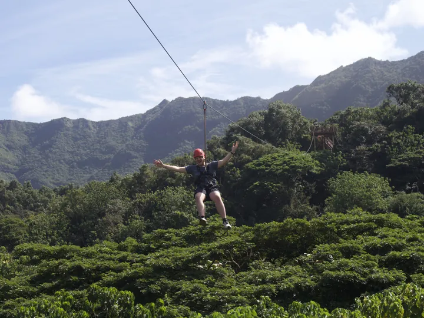
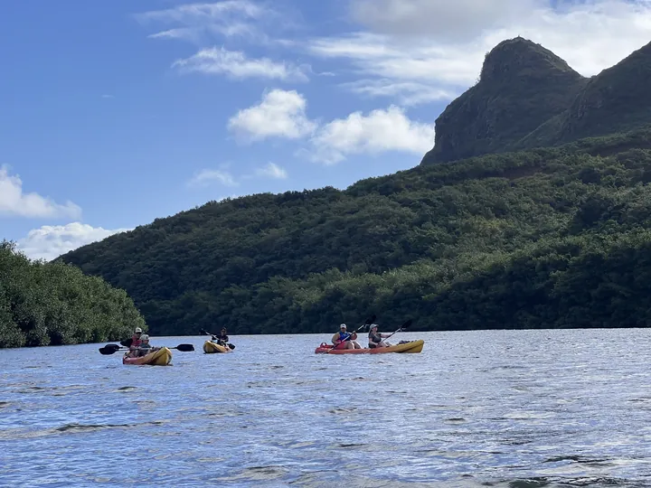
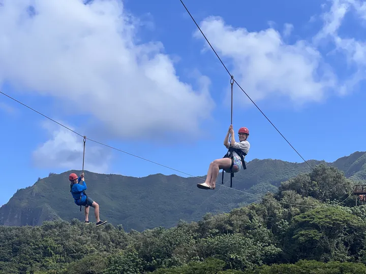
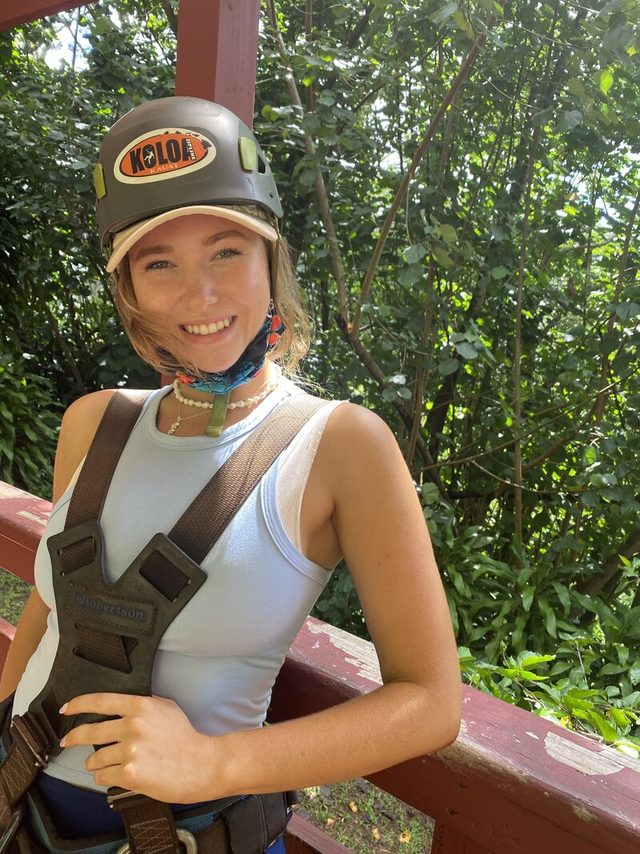

We studied adventure tourism from the inside.
OutVenture Media was built by a team who ran the tours, crewed the boats, and spent years on Kauaʻi understanding exactly why people book and why they come back.
Three years. Three types of operations.
I'm Sareh Michelle, founder of OutVenture Media. In 2021 I sold my e-commerce business and moved to Kauaʻi. I wanted something the mainland couldn't give me; a slower pace, real community, and a life lived outdoors. I took almost every tour I could find on the island, before I started working them. Zipline. Kayak tours. Sailing catamaran snorkel trips and dinner cruises.
The whole time I was guiding, I was studying marketing. But guiding gave me something that no schooling could: three years of casually interviewing guests on every tour. How did you find us? What made you book? Season after season, that research lives in every piece of content OutVenture Media creates.
“I used to guide the tours. Now I tell their stories.”
Story first. Planned on paper. Felt on screen.

Story first
Before the camera, the question: what does a guest need to feel to book? Every shoot starts there.

Planned on paper
Brief, script, shot list, mood board and schedule, shared with you before the day.

Felt on screen
Natural light, people in motion, the moment as it happened. Nothing posed, nothing stock.
A small elite crew, assembled per shoot.
OutVenture assembles a small elite crew per shoot, and a network of creators for social content.

Sareh Michelle
Founder and Creative Director
Former Kauaʻi tour guide turned storyteller. Handles pre-production: briefs, scripts, shot lists and mood boards. On the water or planning the next adventure when not building content strategies.
Andrew Compton
Performance Marketing
Former adventure guide. Runs the paid media, search and tracking side for clients who want their content connected to measurable bookings.
Kauaʻi is home base, not the limit.
Based on Kauaʻi. We shoot across the Hawaiian islands and travel for the right story.
- Based on
- Kauaʻi, Hawaiʻi
- Services
- Video production, reels, photography, social media management, influencer management
- Clients include
- Capt. Andy's Sailing Adventures, Outfitters Kauaʻi, Hoʻomalu Ke Kai, Basecamp Advertising
- Founder
- Sareh Michelle, former Kauaʻi tour guide
Tell us about your operation.
Share what you run and what you want guests to feel. We'll tell you how we would film it.
No pitch decks. A conversation about your operation first.